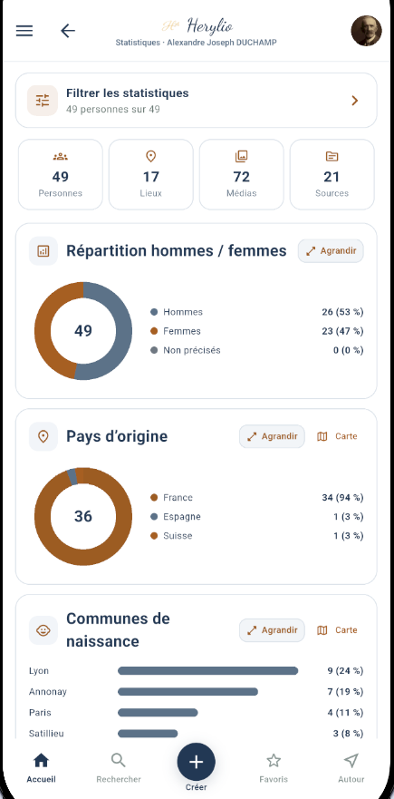
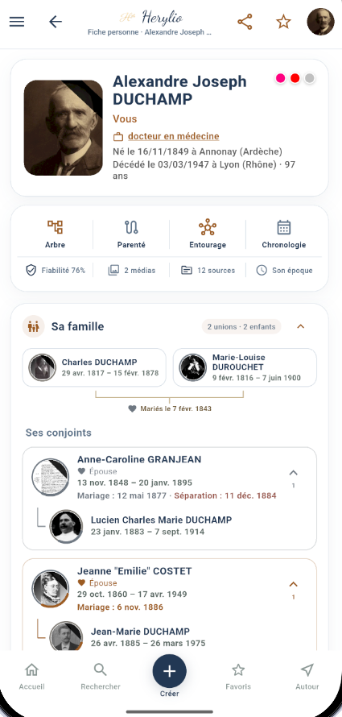
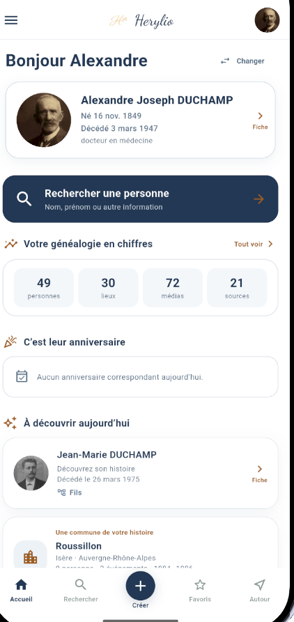
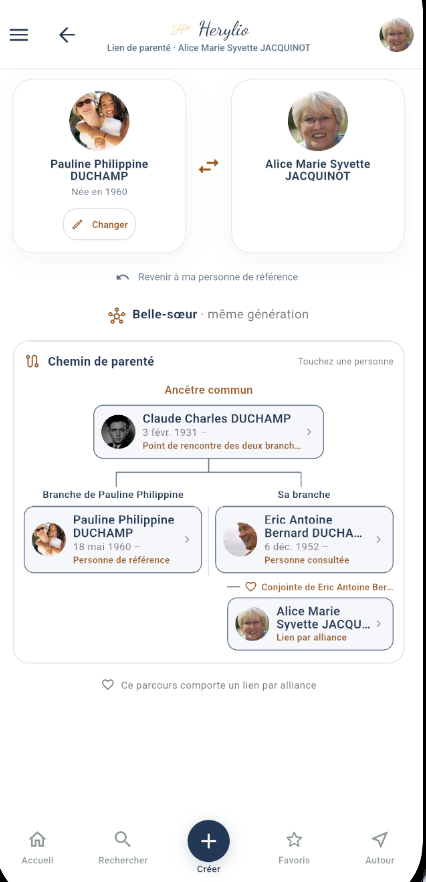
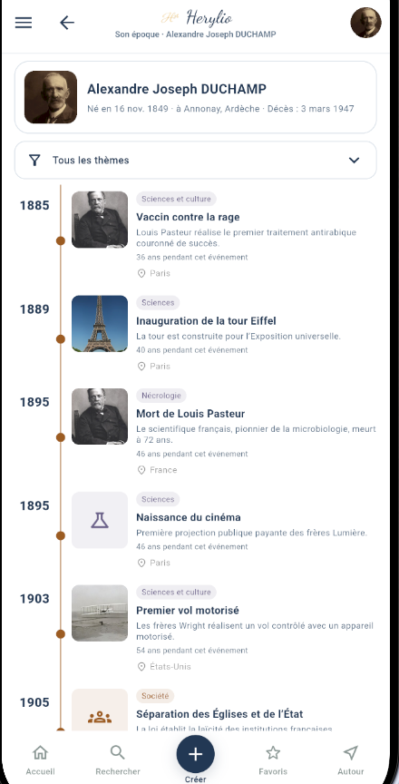
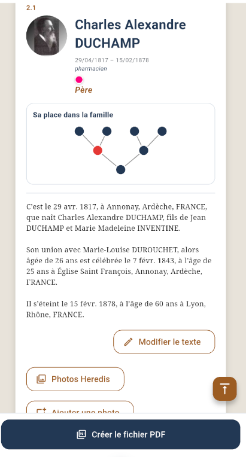

Votre arbre
Explorez les personnes, unions et liens de votre famille.
EXPLORER · COMPRENDRE · TRANSMETTRE
Une application moderne et intuitive pour consulter, explorer et partager votre histoire familiale en toute simplicité.
GEDCOM · Heredis · Android · iOS


Explorez les personnes, unions et liens de votre famille.
Suivez vos ancêtres dans le temps et dans l'espace.
Découvrez votre généalogie sous un nouvel angle.
Transformez vos données en un véritable livre de famille.
Repérez les incohérences et améliorez vos données.
Replacez chaque personne dans son contexte historique.
VOTRE HISTOIRE, AUTREMENT
Herylio est pensé pour la consultation et la découverte. Retrouvez les personnes de votre généalogie, leurs familles, leurs lieux, leurs événements, leurs médias et les liens qui les unissent.
Importez votre généalogie et laissez Herylio la présenter de façon claire, visuelle et agréable sur mobile ou tablette.

QUELQUES APERÇUS
Une interface conçue pour naviguer naturellement au cœur de votre histoire familiale.



TRANSMETTRE
Composez un ouvrage à partir de votre généalogie : fiches, liens familiaux, chronologie, photos et textes. Herylio vous aide à transformer vos recherches en un récit à conserver et à partager.
Simple à prendre en main, riche en fonctionnalités et respectueuse de vos données.
Une navigation claire, même avec une généalogie importante.
Herylio privilégie les données locales et le respect de votre vie privée.
De nouvelles façons d'explorer et de transmettre votre histoire.
3L GÉNÉALOGIE
3L Généalogie est l'éditeur de Herylio, une application née de la passion pour la généalogie et des nouvelles technologies.
Des recherches généalogiques peuvent également être réalisées ponctuellement, sur demande.
« Nos racines nous relient, nos histoires nous rassemblent. »